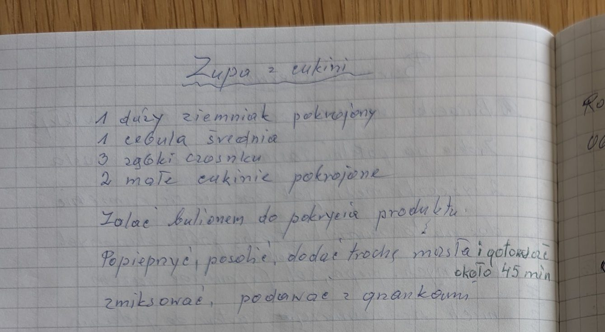

Zupa z cukinii


Składniki
- 1 duży ziemniak
- 1 średnia cebula
- 3 ząbki czosnku
- 2 małe cukinie
- bulion
- sól, pieprz
- masło
- grzanki
Przygotowanie
- Warzywa pokroić i zalać bulionem do pokrycia.
- Posolić, popieprzyć, dodać trochę masła i gotować około 45 minut.
- Zmiksować, podawać z grzankami.
Oryginalny zapis
Zupa z cukinii
1 duży ziemniak pokrojony
1 cebula średnia
3 ząbki czosnku
2 małe cukinie pokrojone
Zalać bulionem do pokrycia produktu.
Popieprzyć, posolić, dodać trochę masła i gotować
około 45 min
zmiksować, podawać z grzankami